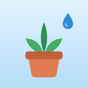

Политика конфиденциальности приложения «Поливалка»
«Поливалка» не собирает персональные данные, не хранит их на серверах и не передаёт третьим лицам.
Какие данные обрабатываются
Только то, что вы вводите сами: названия растений, заметки, фотографии и история ухода. Эти данные хранятся только на вашем устройстве, в изолированной папке приложения. Если у вас включено резервное копирование (iCloud или компьютер на iPhone, резервная копия Google на Android), они попадают в эту копию.
Сеть
Приложение не обращается к интернету и никуда не отправляет ваши данные. Новые версии приходят только через App Store и Google Play.
Резервная копия в файл
Только когда вы сами нажимаете «Сохранить копию», приложение создаёт файл со всеми вашими данными, включая фотографии, и открывает стандартное системное окно «Поделиться». Куда сохранить или отправить файл (Файлы, iCloud Drive, Google Диск, AirDrop, почта), решаете вы. Дальше файлом распоряжается выбранный вами сервис по своим правилам. Файл не зашифрован, поэтому храните его в надёжном месте. «Восстановить из копии» читает только тот файл, который вы выберете сами.
Аналитика и реклама
Не используются. Трекинга нет.
Разрешения
- Камера и фото — только чтобы прикрепить фотографию растения, когда вы сами это делаете.
- Уведомления — только для локальных напоминаний об уходе. Они формируются на устройстве.
Удаление данных
Удалите растение в приложении или удалите приложение целиком, и все данные будут стёрты с устройства. Сохранённые файлы резервной копии удаляйте сами там, куда вы их сохранили.
Дети
Приложение подходит для любого возраста и не собирает данных о детях.
Изменения политики
Если политика изменится, новая версия появится на этой странице с новой датой вступления в силу.
Контакты
Вопросы о конфиденциальности: d.chatyev@gmail.com
Summary in English
Polivalka does not collect, store on servers, or share any personal data. Everything you enter (plant names, notes, photos, care history) stays on your device and is included only in your own device backup (iCloud, computer or Google backup). There is no analytics, advertising, or tracking. Camera and photo access are used only when you attach a plant photo. Notifications are local reminders generated on the device. A backup file is created only when you tap “Save backup”; you choose where it goes via the system share sheet, and the file is not encrypted. Contact: d.chatyev@gmail.com.